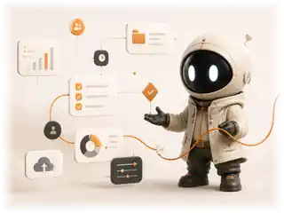
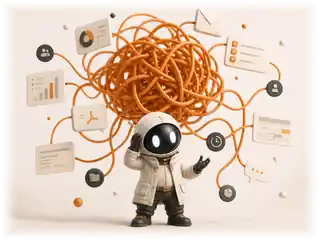
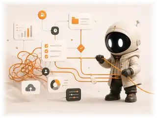
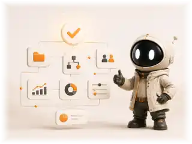

G
Gestionali
Sistemi operativi interni costruiti intorno a ruoli, flussi, documenti e dati reali.
Progettiamo strumenti digitali attorno al modo in cui lavori davvero. Capiamo prima di costruire, così processi, persone e dati smettono di vivere in sistemi separati.

Non partiamo da una lista di funzionalità. Partiamo da ciò che succede davvero: persone, passaggi manuali, file, gestionali, eccezioni, tempi morti e informazioni che si perdono.
Il primo risultato non è codice: è capire dove nasce la complessità e quale parte vale davvero la pena cambiare.
Email, fogli Excel, PDF, chat, software verticali e procedure nate nel tempo risolvono singoli pezzi. Il problema emerge quando devono lavorare insieme.

Ridisegniamo il flusso: cosa deve succedere, chi deve intervenire, quali dati servono, quali sistemi possono restare e quali collegamenti mancano.
Il software diventa una conseguenza della struttura, non il punto di partenza.

Non un catalogo di prodotti standard. Costruiamo ciò che serve per collegare persone, dati e processi senza aggiungere altro rumore.
Sistemi operativi interni costruiti intorno a ruoli, flussi, documenti e dati reali.
Accessi ordinati per clienti, partner, operatori, rete vendita e collaboratori.
Interfacce mirate per attività specifiche, senza il peso di piattaforme generaliste.
Riduciamo ridondanze, errori e passaggi manuali che consumano tempo ogni giorno.
Colleghiamo sistemi esistenti anche quando sono nati in momenti e logiche diverse.
Usiamo l'intelligenza artificiale dove rende più semplice interpretare dati, documenti o attività.
Tre fasi semplici. L'obiettivo è evitare di spendere tempo e budget costruendo la soluzione sbagliata.
Processi, persone, strumenti, vincoli ed eccezioni. Definiamo il problema prima della soluzione.
Ridisegniamo il flusso, scegliamo cosa integrare, automatizzare e semplificare.
Software, integrazioni e automazioni entrano nel lavoro quotidiano e vengono evoluti nel tempo.
Il valore non è avere un software nuovo. È togliere attrito da una parte concreta dell'azienda.
Le persone sanno dove lavorare. I dati hanno un posto preciso. I passaggi importanti sono visibili. E la tecnologia torna a fare il suo mestiere: semplificare.

Raccontaci come funziona oggi. Il primo obiettivo è capire se e dove il software può togliere complessità, non venderti una piattaforma in più.